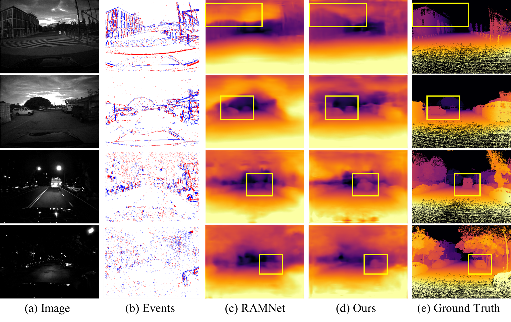
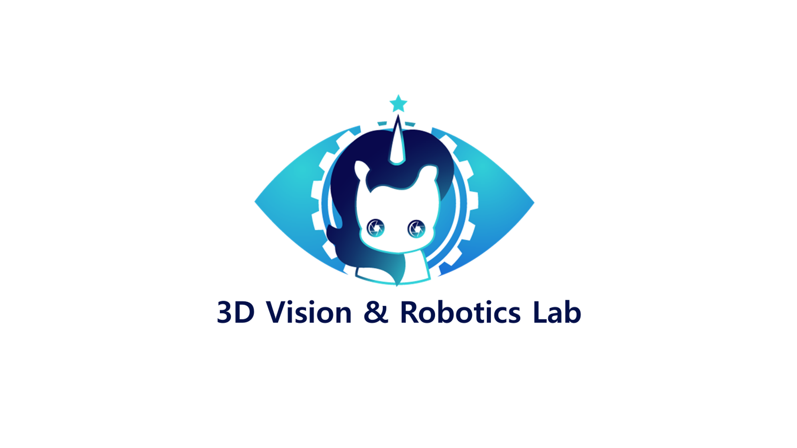
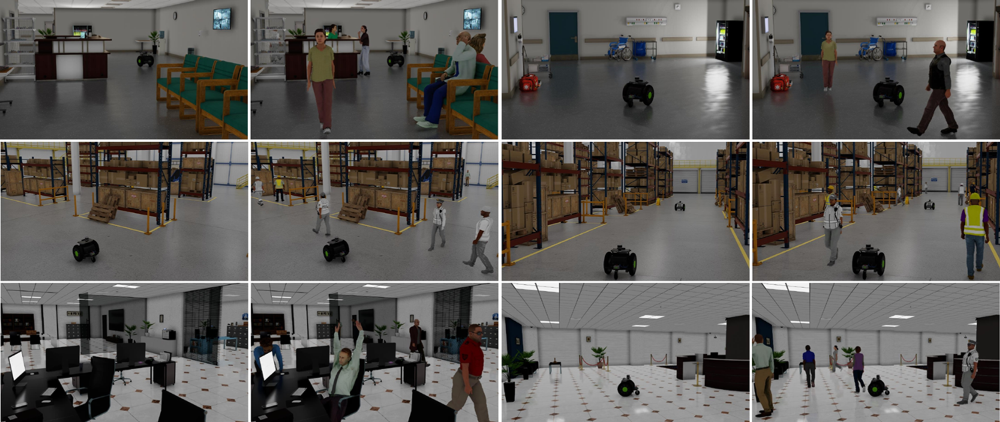
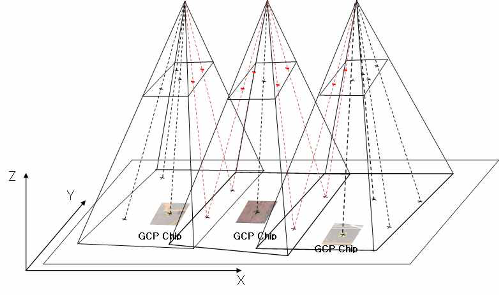
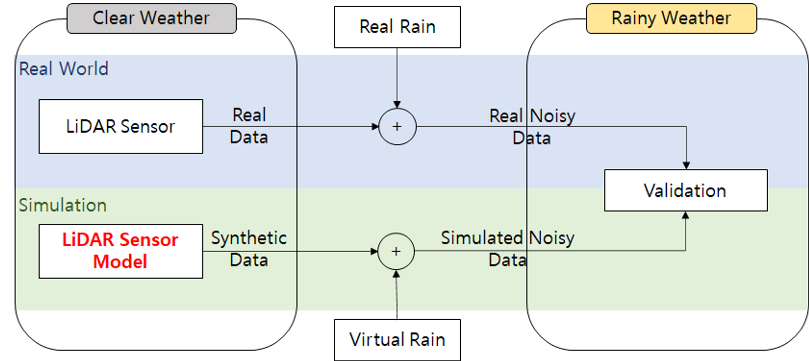

|
Harin Park I'm a master student in 3D Vision & Robotics Lab in Artificial Intelligence at UNIST, supervised by Kyungdon Joo. I am interested in 3D vision, Computer vision, and Robotics. In particular, I am currently focusing on the AI perception tasks for robot navigation and autonomous driving, such as depth estimation. |
{kind=link}
Publications |

|
A Benchmark Dataset for Collaborative SLAM in Service Environments
Harin Park, Inha Lee, Minje Kim, Hyungyu Park, Kyungdon Joo RA-L, 2024 (Under review) [ Project page | arXiv ]
- Propose a benchmark synthetic dataset for collaboriatve SLAM for multiple service robots.
|
Projects |
|

|
Depth estimation combining events and images
Graduate project, (2023.9~2024.6)
- Propose a monocualr depth estimation model via the fusion of events and images.
|
|

|
Depth estimation based on omnidirectional cameras
On-going project, (2023.9~Present) - Propose a structure-aware monocular depth estimation via omnidirectional images. |
|

|
Collaborative SLAM (C-SLAM) benchmark dataset
Funded by the IITP, (2022.9~Present)
- Propose the benchmark synthetic C-SLAM dataset for multiple service robots.
|
|

|
Aerial Triangulation using ground control point (GCP) chips
(2021.5~2021.5)
- Propose the use of GCP chips for the automation of aerial triangulation.
|
|

|
LiDAR sensor modeling in simulation
(2021.3~2022.2)
- Propose the LiDAR radiometric model reflecting the effects that real rain influence to LiDAR sensor.
|
Education |
Teaching |
|
Template from this website. |